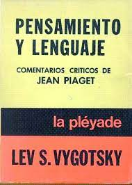

📚 Volver al Catálogo
📚 Volver a la Galería
L. Vygotsky
Lenguaje y Pensamiento
- Sinópsis:
-
"Lenguaje y Pensamiento" explora la profunda e intrínseca relación entre el desarrollo del lenguaje y el pensamiento en los niños. Vygotsky argumenta que estas dos funciones psicológicas tienen raíces genéticas separadas, pero se entrelazan en un punto crucial del desarrollo para influirse mutuamente. El lenguaje no es solo una herramienta para expresar pensamientos preexistentes, sino que juega un papel fundamental en la formación y organización del pensamiento. Vygotsky destaca la importancia del lenguaje social en la internalización y el desarrollo del lenguaje interno o pensamiento verbal, que se convierte en un instrumento esencial para la autorregulación y la resolución de problemas. La obra subraya el papel mediador del lenguaje en el desarrollo cognitivo y la influencia del contexto sociocultural en este proceso.

- Detalles de Publicación:
- Escrito: Principalmente en la década de 1930. Vygotsky murió prematuramente en 1934, dejando parte de su obra inconclusa.
- Publicado: Originalmente en ruso en 1934 con el título "Мышление и речь" (Mýshleniye i rech'). Posteriormente, fue traducido a otros idiomas, aunque la traducción al inglés tardó en llegar y tuvo diferentes versiones y títulos, siendo "Thought and Language" y "Language and Thought" los más comunes. La edición más completa y académicamente rigurosa en inglés se publicó mucho después, basada en los manuscritos originales.
- Más libros de Vygotsky aquí
⬆️